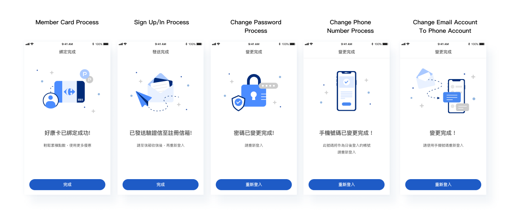
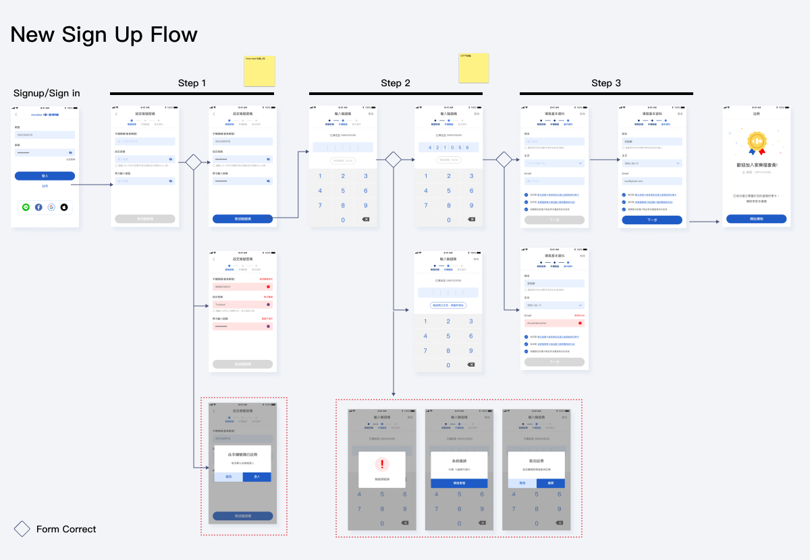
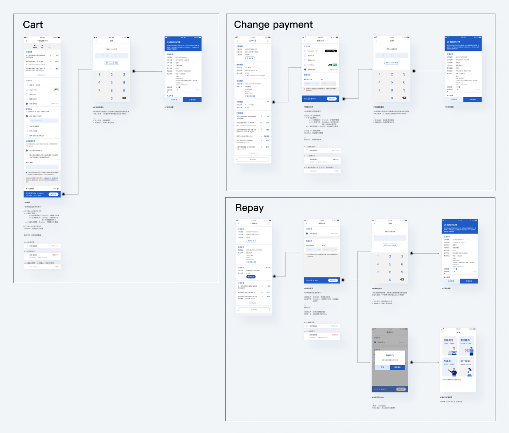
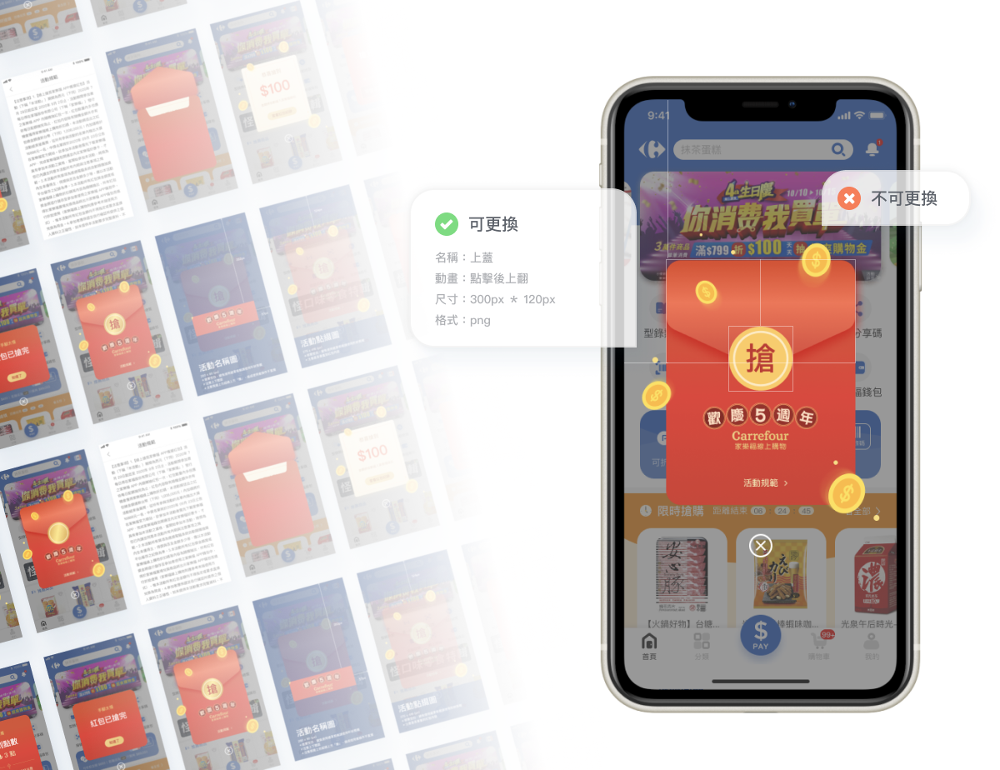

Task & Timeline
There are many tasks that I have been responsible for that can be categorized into “New Features” and “Optimizations”. I will choose four tasks to introduce in the following content.

Carrefour is a French group and a leading global retailer. It set up the first branch store in Taiwan in 1989, and has more than 100 stores now. Moreover, it has diversified store types, such as mass retailers, supermarkets, and online shopping.
Under the trend of OMO(Online-Merge-Offline), Carrefour wants to develop an app that includes Online and offline services, making a great customer experience about shopping.
Designer team of 2
In this project, I worked at the agency hired by Carrefour, including, PM, SA, Design, Dev, QA Team
8 Months
Figma
There are many tasks that I have been responsible for that can be categorized into “New Features” and “Optimizations”. I will choose four tasks to introduce in the following content.
Carrefour uses different membership systems at the same time for some years, which cause some problems :
lead to users often failing in the process of functions related to membership
Some users use Email Accounts, but some use Phone Accounts. That make maintenance and planning is difficult
Thus, Carrefour determined to integrate different membership systems into a new one. I design some special processes to help users switch to the new membership system, such as change email account to phone account process, and we also redesign some original processes, such as sign-in/up process, change passwords process.


For customers, more payment options are supplied, the checkout process gets way easier, which ultimately reduces the cart abandonment rate. Users can have 8 payment ways in this app, including credit card, apple pay, Linepay, and Carrefour’s digital wallet.

Carrefour hoped that they could often change the style of red envelopes to coordinate different campaigns, but our team wants to reduce development costs. So to solve this problem, I divided red envelopes into respective components.

We are one of the first teams in Taiwan to use Apple's iOS 14 new feature: App Clips, and we are honored to be on the homepage of the Apple iOS 14 official website.

My team interviewed Apple’s people, read articles about App Clips, and hold a workshop to understand its feature, restrictions ,and application cases.
We had brainstorming sessions to explore possible concepts for app clips, then we proposed to Apple and Carrefour, and discussed with them. Finally, they chose :
As long as users through an App Clip Code, NFC tag, or a QR code activate Apple Clips to apply for a loyalty card quickly, they can add the loyalty card to Apple Wallet. Thus, users could enjoy faster services about identification and checkout.
In the commodity area with NFC, users can pay directly through induction. And the product would be delivered to your home without queuing for checkout.